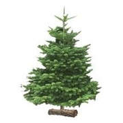

Informations utiles
>> Compte-rendus des conseils municipaux

Ramassage de noël
Lundi 10 et 17 janvier 2022
Bois stères faconés
Inscription en mairie jusqu'au 26 mars 2022
Location salle des fêtes 33 rue Octave Japy
Pour le 1er semestre 2022
Déchets interdits
Les piles, les batteries ou les ampoules,
les capsules en aluminium pour le café, les dechets
d'équipements électriques, les huiles alimentaires,
les huiles moteur et autre huiles de vidange, les pneus...
Calendrier des collectes 2022
-- Calendrier des collectes des dechets --Plateforme territoriale de rénovation énergétique de PMA
Service Effilogis maison individuelle avec PMA avec sa Plateforme Territoriale Énergétique (PTRE),
Pays de Montbéliard Agglomération déploie localment un service dédié à la rénovation performante de
votre habitat.